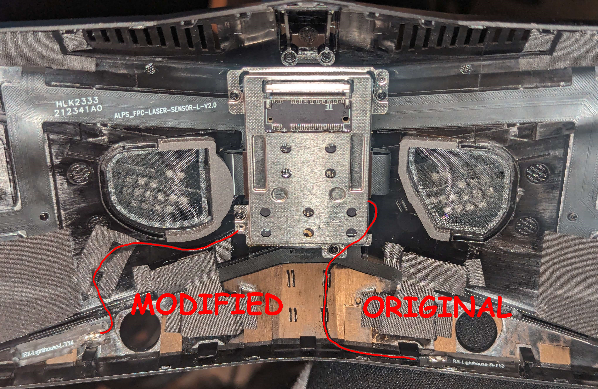

The Issue
When using any lighthouse controller or tracker connected through the lighthouse faceplate, they drift and lose tracking easily, with generally poor quality tracking.
This appears to be caused by electrical interference between the Crystal's WIFI antenna and the antennas for the watchman dongles in the faceplate.
I was able to fix this by rerouting the wires and relocating the antennas. My controller tracking works flawlessly now, just like it did with my index headset
WARNING: THIS WILL VOID YOUR WARRANTY. DON'T DO THIS UNLESS YOU KNOW WHAT YOU ARE DOING AND ACCEPT THE CONSEQUENSES
Before you start
- Choose where you want to move the antennas and how you want to route the wires. The route I chose (left side of the image) seems to work well for me, but this choice was made somewhat arbitrarily, as I was just trying to move them away from the WIFI antenna on the crystal.
- You may have to cut a channel to route the wires through. There is very little clearance between the crystal and the inside of the faceplate. I cut a small channel on the inside where the cable passes by the groove at the bottom of the headset. If you don't do this, the faceplate may not sit right on the headset, and may not function correctly. Do not try to force it into place, that may damage the antennas.

- Remove the lighthouse faceplate
- Gently remove the cable management sticker on the bottom center, (not pictured, but it will be covering the four clips where the two wires pass each other) Save this sticker, as you may wish to reuse it in later steps.
Then, for each antenna: (The same process is mirrored on both sides; the image shows the original layout on the right and the modified layout on the left)
- Gently pull the wire out of the cable management clips in the bottom center of the faceplate
- Gently peel up the antenna (they are the stickers that start with RX-Lighthouse-L and RX-Lighthouse-R)
BE CAREFUL, these "stickers" are the antennas, so don't tear, fold, or otherwise damage them
- Lay down the antenna in your desired spot. (lay the antenna flat, sticking it back to the faceplate. Try not to put any unnecessary stress on it, and make sure the wire fits through your desired route)
- Gently route the wire, and optionally re-use the sticker from step 2 to hold them in place. (I cut the sticker in half and used each half of the sticker for one of the wires; one of these can be seen in the image holding down the left wire)
- Repeat steps 3-6 with the other antenna
-
- Gently place the lighthouse faceplate onto the crystal. if the clips do not want to engage, (particularly on the bottom), do not force it. Remove the faceplate again and ensure the wires have suitable space and are not being pinched.